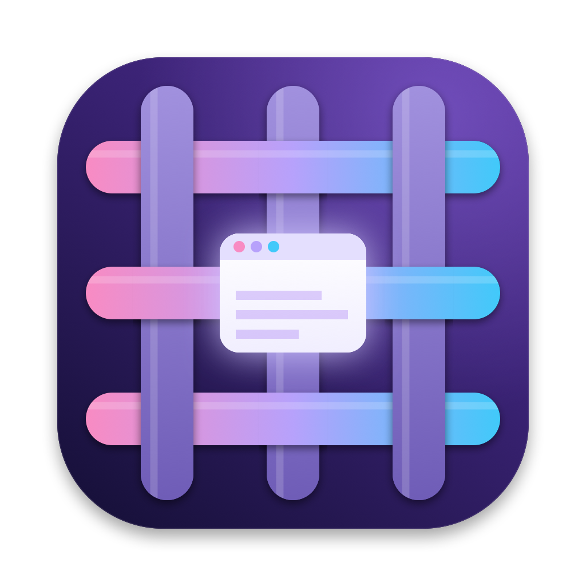

<!doctype html>
<meta charset="utf-8">
<!-- 剪辑用的字幕卡和片头片尾，edit.sh 用无头 Chrome 截成透明 PNG。
     ?k=cap&t=标题&s=说明   底部字幕（透明底）
     ?k=intro / ?k=outro&owner=xxx  片头 / 片尾 -->
<style>
  html, body { margin: 0; width: 1920px; height: 1080px; overflow: hidden; background: transparent;
    font-family: -apple-system, "PingFang SC", "Hiragino Sans GB", sans-serif; color: #fff; }
  .cap { position: absolute; left: 50%; bottom: 64px; transform: translateX(-50%); text-align: center;
    padding: 22px 44px 24px; border-radius: 22px; background: rgba(18, 14, 30, .78);
    box-shadow: 0 18px 50px rgba(0,0,0,.35), inset 0 0 0 1px rgba(255,255,255,.12); backdrop-filter: blur(20px); white-space: nowrap; }
  .cap h1 { margin: 0 0 8px; font-size: 40px; font-weight: 800; letter-spacing: .04em; }
  .cap p { margin: 0; font-size: 24px; color: rgba(255,255,255,.82); }
  .cap kbd { font: inherit; padding: 1px 9px; margin: 0 2px; border-radius: 7px; background: rgba(255,255,255,.16); }
  .full { position: absolute; inset: 0; display: flex; flex-direction: column; align-items: center; justify-content: center;
    background: radial-gradient(ellipse at 50% 38%, #4b2a86 0%, #1d1433 46%, #110d1d 100%); }
  .full img { width: 150px; height: 150px; filter: drop-shadow(0 18px 40px rgba(150,90,255,.55)); }
  .full h2 { margin: 26px 0 0; font-size: 104px; font-weight: 800; letter-spacing: .06em;
    background: linear-gradient(180deg, #fff, #d9c8ff); -webkit-background-clip: text; color: transparent; }
  .full .tag { margin-top: 14px; font-size: 32px; color: rgba(255,255,255,.85); }
  .chips { display: flex; gap: 16px; margin-top: 40px; }
  .chips span { font-size: 24px; padding: 10px 20px; border-radius: 14px; background: rgba(255,255,255,.09); box-shadow: inset 0 0 0 1px rgba(255,255,255,.1); }
  .cmd { margin-top: 40px; font: 34px ui-monospace, Menlo, monospace; padding: 20px 34px; border-radius: 16px;
    background: rgba(255,255,255,.06); box-shadow: inset 0 0 0 1px rgba(255,255,255,.16); }
  .cmd b { color: #b48cff; margin-right: 16px; }
  .foot { margin-top: 26px; font-size: 24px; color: rgba(255,255,255,.6); }
</style>
<body>
<script>
  const P = new URLSearchParams(location.search), k = P.get('k'), owner = P.get('owner') || 'ahuili';
  const esc = s => (s || '').replace(/&/g, '&amp;').replace(/</g, '&lt;').replace(/\[(.+?)\]/g, '<kbd>$1</kbd>');
  if (k === 'cap') document.body.innerHTML = `<div class="cap"><h1>${esc(P.get('t'))}</h1><p>${esc(P.get('s'))}</p></div>`;
  else if (k === 'intro') document.body.innerHTML = `<div class="full">
      <h2>Weft</h2><div class="tag">窗口开得再多，眼前也只留你现在要用的那几个</div>
      <div class="foot" style="margin-top:34px">以下是真实软件录屏 · 窗口内容已模糊处理</div></div>`;
  else document.body.innerHTML = `<div class="full"><h2>Weft</h2>
      <div class="chips"><span>🎭 舞台模式</span><span>🎬 场景</span><span>🗂 叠放</span><span>🔗 跨屏绑定</span><span>✨ AI 整理</span></div>
      <div class="cmd"><b>$</b>brew install --cask ${owner}/tap/weft</div>
      <div class="foot">github.com/${owner}/weft · 开源 · MIT · macOS 14+</div></div>`;
</script>
</body>
